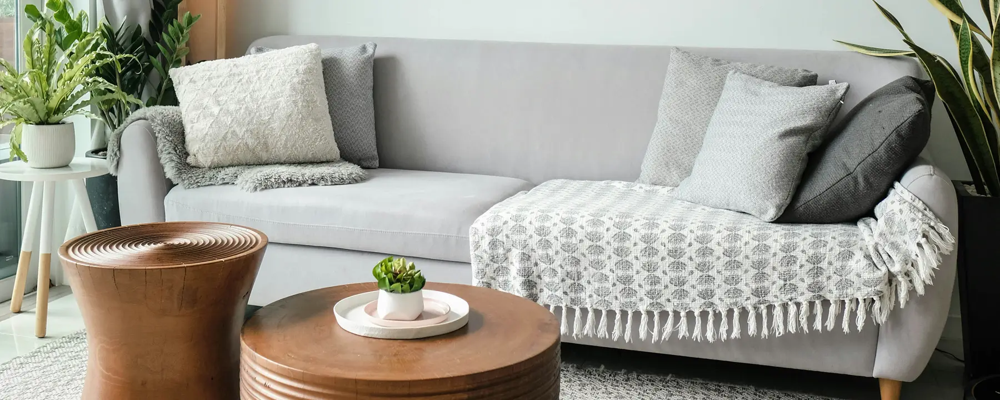

Ideas, inspiration, and the latest from the world of Indian home décor. Curated by Urban Nest. Discussed by you.
FILTER
Latest
Loading the latest…

"The details are not the details. They make the design."
Charles Eames
THE COMMUNITY
What the Nest is talking about
Thank you! Your message has been posted to The Nest.
P
Priya M. · Mumbai
June 12, 2025
I never thought a soap dispenser could make me feel good about my bathroom until I actually bought a nice one. It sounds silly but it genuinely changed how I feel about getting ready in the morning. Urban Nest is right, it really is the small things.
R
Rahul S. · Bengaluru
May 28, 2025
The 3D bathroom experience on this website is genuinely the most useful thing I've ever used for home shopping. I could actually see how the waste basket would look next to the toilet before buying. More websites need to do this.
A
Aarav K. · Delhi
April 15, 2025
Just moved into my first apartment and this has been my go-to for figuring out what I actually need vs what looks good in isolation. The curated approach is so much better than scrolling through 500 options on Amazon.
STAY IN THE LOOP
The Nest Edit, in your inbox.
New articles, décor guides, and curated finds, every two weeks.
What the Nest is talking about
I never thought a soap dispenser could make me feel good about my bathroom until I actually bought a nice one. It sounds silly but it genuinely changed how I feel about getting ready in the morning. Urban Nest is right, it really is the small things.
The 3D bathroom experience on this website is genuinely the most useful thing I've ever used for home shopping. I could actually see how the waste basket would look next to the toilet before buying. More websites need to do this.
Just moved into my first apartment and this has been my go-to for figuring out what I actually need vs what looks good in isolation. The curated approach is so much better than scrolling through 500 options on Amazon.